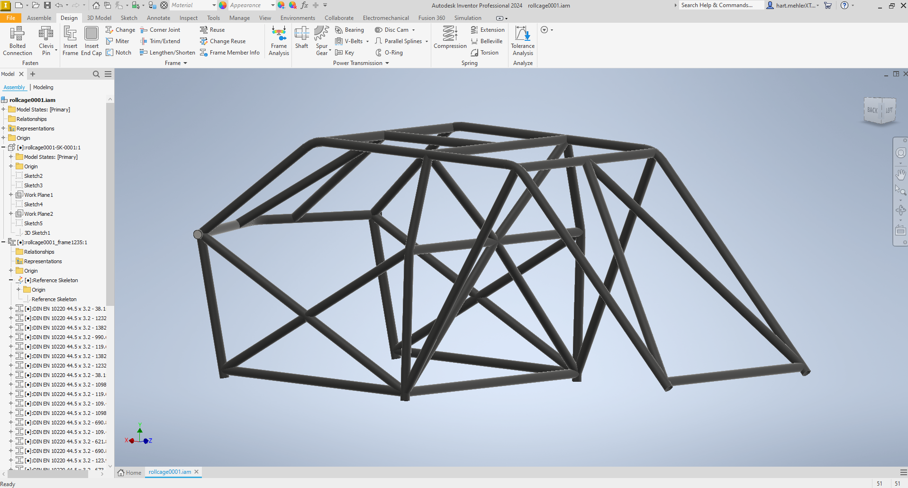
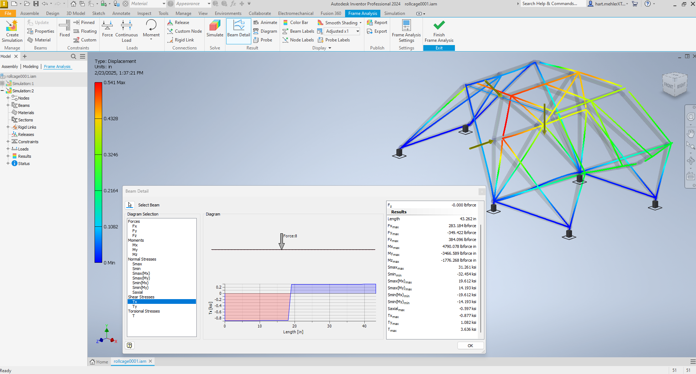
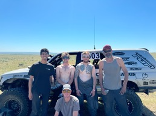

Vehicle design · Fabrication · Testing
Building an Ultra4 race truck from a 1999 4Runner.
I led a team through the design, build, and race testing of a 4600-class truck. The work brought engineering analysis into the shop and put our decisions to a real test on the course.

01 / The challenge
Turn a production vehicle into a race-ready system.
We started with a 1999 Toyota 4Runner and a goal: build a 4600-class truck for the Yellowstone Offroad Racing Series. As project lead and driver, I coordinated design, sourcing, fabrication, assembly, fundraising, and testing with our team.
Every change had to work with the others. Cage geometry affected packaging; suspension changes affected loads and clearance; moving the fuel system created new integration and safety requirements.
02 / Design and analysis
Model it, check it, then build it.
I developed the cage design in Autodesk Inventor using dimension-driven drafting and frame members. Frame analysis and a Python estimate of rollover forces helped us examine the loads and possible displacement before fabrication. These were design tools, not a substitute for physical testing.


03 / The build
Make the systems work together.
The team fabricated the cage and integrated changes to the front suspension, rear three-link suspension, shocks, differentials, wiring, and fuel system. The fuel cell was relocated to make room for the rear suspension links.
The project also meant managing a roughly $28,000 parts and expenses budget, developing sponsorship proposals, and coordinating support from suppliers and teammates.

04 / The real test
Race day revealed what the model could not.
At the Big Sky 200, the truck completed four passes and was running first in class. At mile 28, a rear lower shock eye failed during a turn, leading to a rollover and an oil-fed fire. The cage and safety equipment protected the occupants from serious injury.

05 / What came next
Document the failure. Improve the design.
We traced the rollover to the failed shock eye and identified changes to better protect that mounting point. The proposed next iteration included a trailing-arm rear setup, revised breather routing, and an engine cage tied into the roll cage.
This was a team project. I served as project lead and driver, with fabrication, assembly, mechanics, and race support from the teammates and sponsors credited in the capstone presentation.